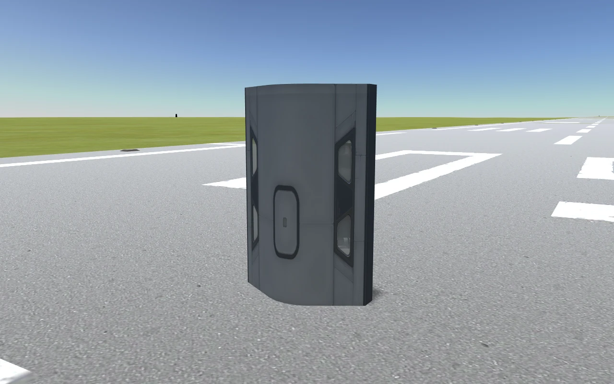
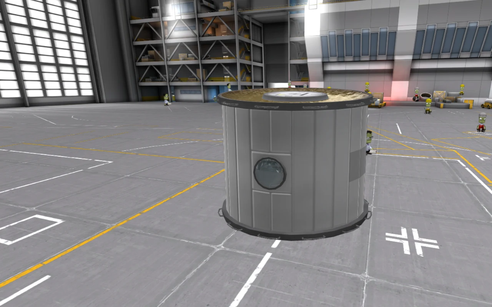
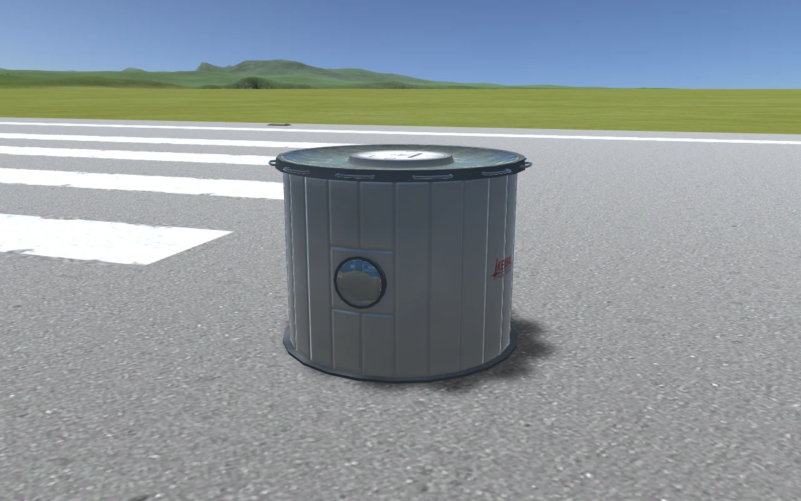
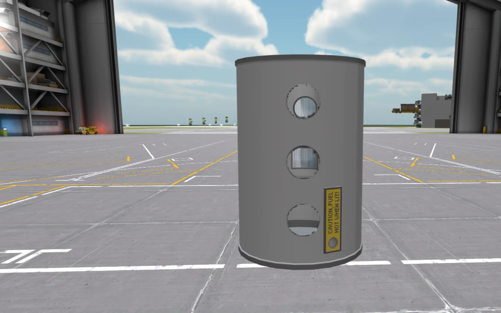
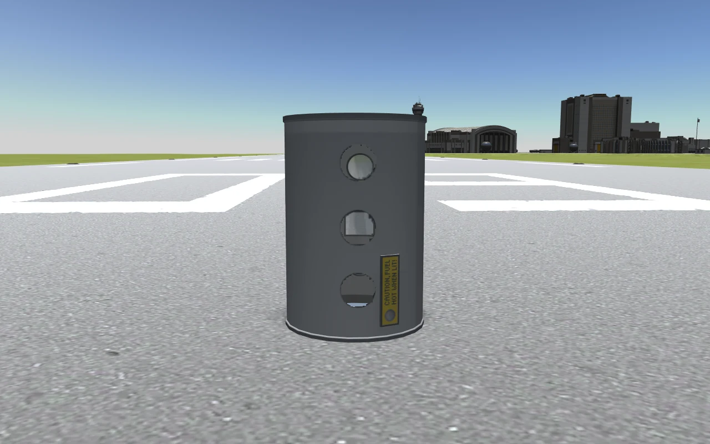
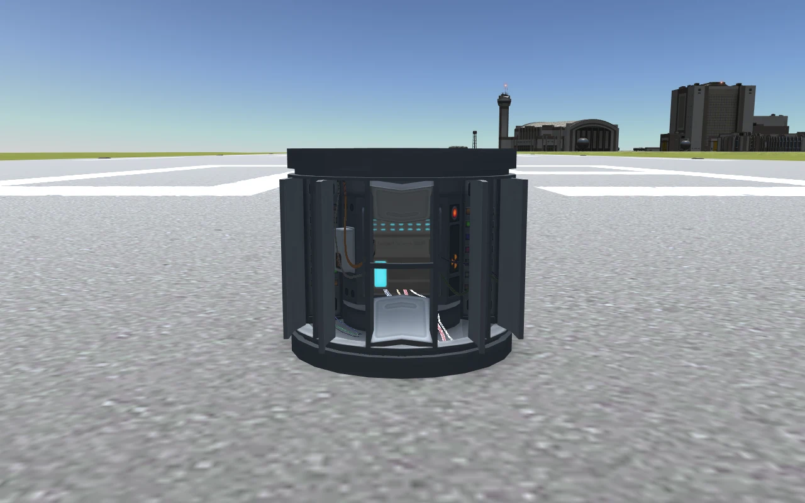
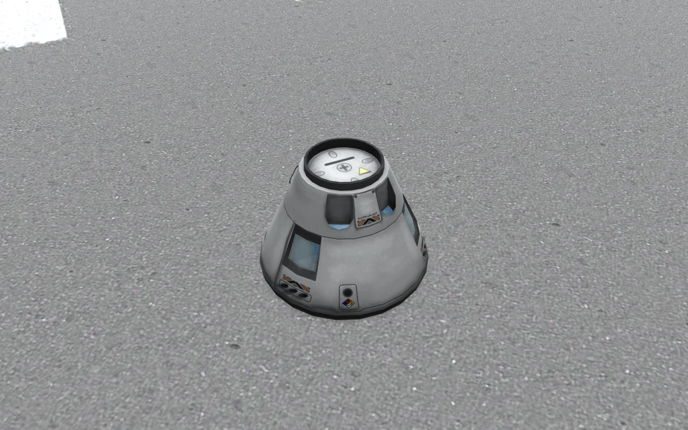
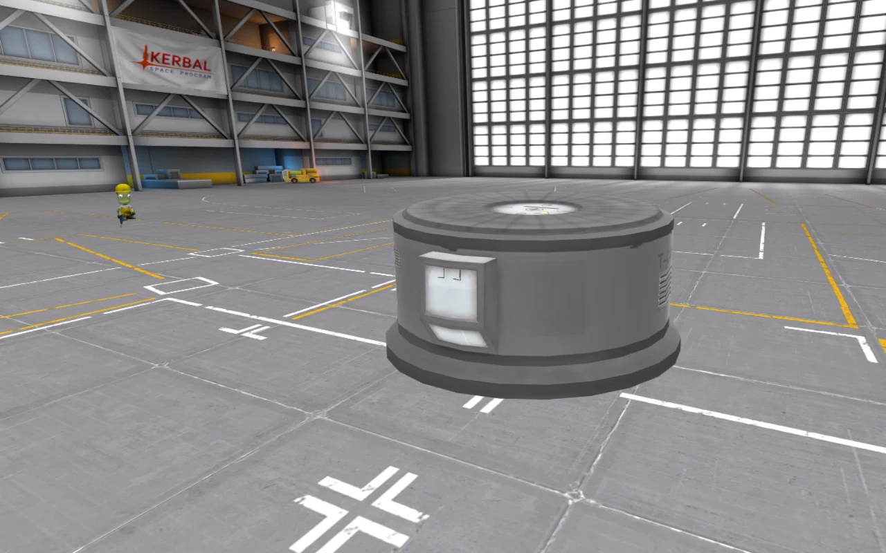
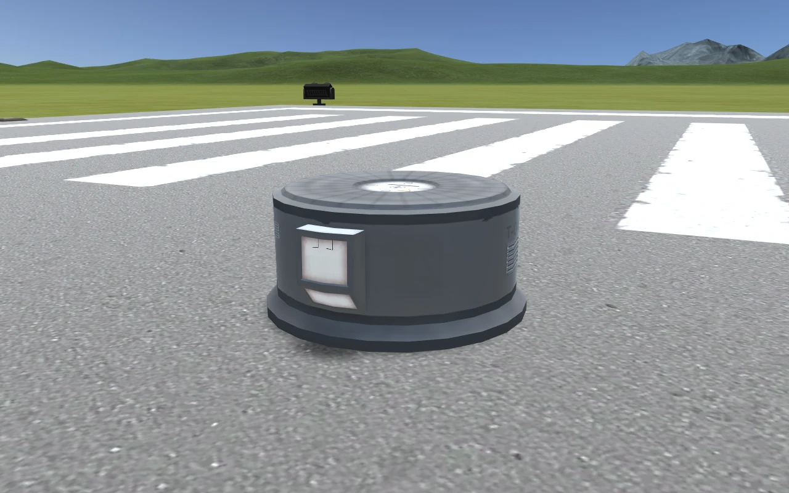
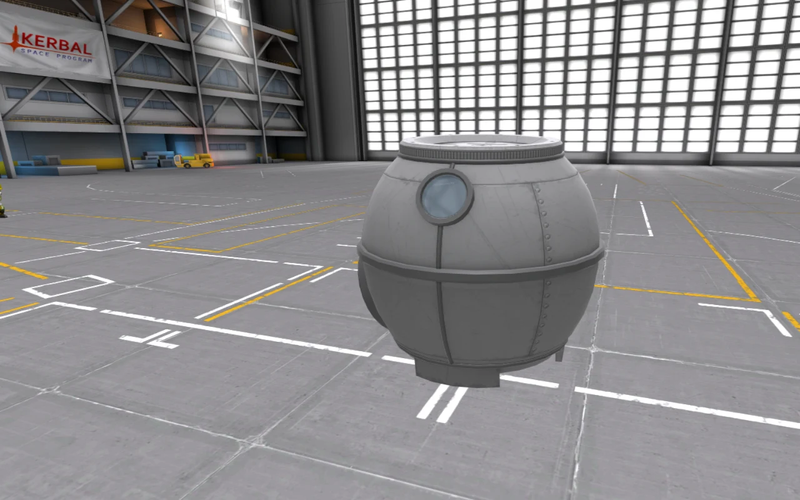

Mk2 Crewed Lab MPL-MK2-2


Mobile Processing Lab MPL-CC-2


Mobile Processing Lab MPL-FS2-2


Mobile Processing Lab MPL-MK-1-CC-1


Mobile Processing Lab MPL-MK1-2-2


Mobile Processing Lab MPL-MK2-LC-2


Mobile Processing Lab MPL-ON-2
